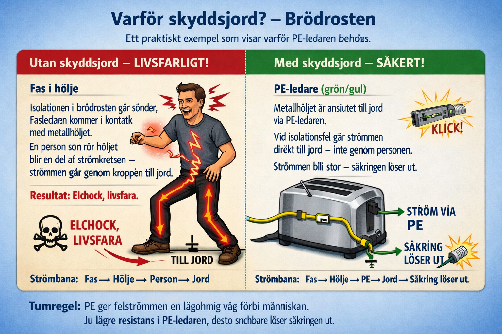
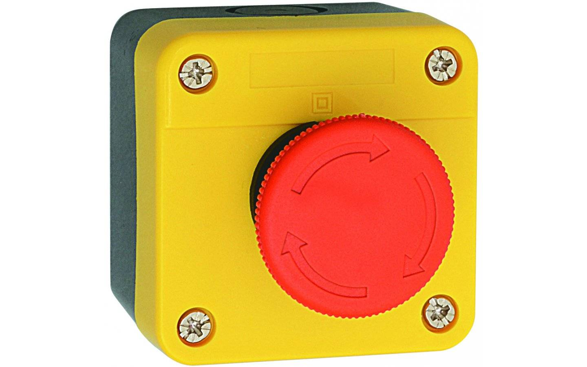
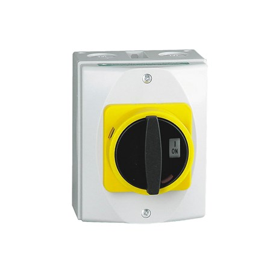

Avsnitt 6a
Jordfelsbrytarens funktion
Jordfelsbrytaren (GFCI/RCD) skyddar mot livsfarliga läckströmmar genom att bryta kretsen på millisekunder.
Hur fungerar den?
Strömmen som leds ut i fasledarna ska vara densamma som kommer i retur i neutralledaren. Om det uppmätta värdet (summaströmmen) inte är noll betyder det att ström försvinner någonstans på vägen — det kallas jordfel (läckström).
Om skillnaden blir 30 mA eller mer bryter jordfelsbrytaren strömmen mycket snabbt (30 mA för personskydd).
Det är kombinationen av ström och tid som dödar. Redan vid 30 mA i >100 ms kan hjärtat börja flimra. Jordfelsbrytaren bryter på <40 ms — snabbt nog för att rädda liv. Säkringen skyddar kabeln, jordfelsbrytaren skyddar dig.
🔵 Toroid (7)
En ringformad magnetkärna som alla ledare (L1, L2, L3, N) löper igenom. Magnetkärnan ger information om jordfel.
⚡ Mekanism (1)
Den mekaniska delen som bryter kontakterna när ett jordfel detekteras.
🔁 Tripprelä (2)
Aktiveras av sekundärströmmen i toroides lindning och utlöser mekanismen.
🧪 Testknapp (4)
Simulerar ett jordfel via testkretsen (3 & 5) — används för att kontrollera att bryatren fungerar. Bör testas månadsvis.
🌀 Primärlindning (6)
Fasledarna och neutralledaren bildar primärlindningen i toroides magnetkrets.
📡 Sekundärlindning (8)
Detekterar obalansen i magnetfältet och skapar den ström som utlöser tripprelän.
Normalläge vs. jordfel
Ifas ut = IN in
Summa = 0
Ingen utlösning
Ifas ut ≠ IN in
Skillnad ≥ 30 mA
→ Brytar <40 ms
Jordfelsbrytarens princip
Typer av jordfelsbrytare
Olika miljöer kräver olika känslighet. En JFB för hemmet hade löst ut konstant på ett sjukhus med all medicinsk utrustning.
| Typ | Märkvärde (IΔn) | Faktisk utlösning (IA) | Lag på |
|---|---|---|---|
| Standard personskydd | 30 mA | 15–30 mA | Hem, kontor |
| Förhöjt personskydd | 10 mA | 5–10 mA | Dagis, sjukhus, badkar |
| Industri / Brandskydd | 300 mA | 150–300 mA | Industri, lantbruk |
Industri-JFB:n skyddar inte primärt mot personskada — den skyddar mot brand orsakad av läckströmmar som hettar upp material.
🧪 Testprocedur – 3 steg
En jordfelsbrytare måste verifieras vid installation och regelbundet därefter. Här är de tre standardstegen:
Tryck på testknappen (T) på JFB:n. Den simulerar ett jordfel via en intern testkrets. JFB ska lösa ut omedelbart. Verifierar att mekanismen och reläet fungerar.
Koppla en kortslutning mellan PE och N på utsidan av JFB:n (innan last). JFB ska lösa ut. Om den inte löser ut är installationen felaktig — PE och N är felväxlade eller samankopplade.
Anslut en jordfelsbrytarprovare som injicerar exakt 30 mA läckström. JFB ska lösa ut. Provaren kontrollerar också utlösningstiden (ska vara <40 ms). Används vid besiktning och egenkontroll.
🍞 Varför skyddsjord? – Brödrosten
Ett praktiskt exempel som visar varför PE-ledaren finns.

Isolationen i brödrosten går sönder. Fasen når metallhöljet. En person som rör höljet bildar en krets genom kroppen till jord. Strömmen väljer personen — livsfarligt.
PE-ledaren (grön/gul) kopplar metallhöljet direkt till jord. Vid isolationsfel flödar strömmen via PE — inte via personen. Strömmen blir stor → säkringen löser ut.
Underspänningsskydd
Ett underspänningsskydd vaktar spänningsnivån och bryter strömmen om spänningen sjunker under ett inställt värde. Det används för att skydda dyra apparater med motorer — t.ex. kylskåp, pumpar och kompressorer.
- Kan installeras i kylskåp och andra vitvaror
- Hindrar motorn från att starta vid för låg spänning (skadar lindningarna)
- Återstartar automatiskt när spänningen är normal igen
Avsnitt 6b
Nödstopp & Säkerhetsbrytare
Nödstopp och säkerhetsbrytare används för att snabbt och säkert bryta strömmen vid fara eller underhåll.
🔴 Nödstopp
Röd svampknapp — används vid akut fara. Trycks ned och låses i nedtryckt läge. Måste vridas för att återställas. Kopplar bort all kraft till maskinen.
🔑 Arbetsbrytare / Säkerhetsbrytare
Bryter spänningen vid service och underhåll. Kan låsas med hänglås (LOTO — Lockout/Tagout) för att förhindra oavsiktlig inkoppling.
🟢 Nödstopp-skylt
Grön bakgrund med vit symbol — markerar var nödstoppet finns. Placeras synligt och lättåtkomligt.
⚠️ Viktigt att veta
- Nödstopp ska alltid vara rött och tydligt märkt.
- Nödstopp är inte ett vanligt driftstopp — används bara vid fara.
- Krav på nödstopp regleras i maskindirektivet och SS-EN 60204-1.
- Nödstoppet måste vara åtkomligt utan att operatören behöver flytta sig mer än ett steg.
Nödstopp & Säkerhetsbrytare – komponenter


Avsnitt 6c
Transienter – Smutsig el
El som innehåller störningar kallas smutsig el. Transienter är kortvariga spänningsstötar som kan trigga jordfelsbrytare och skada känslig elektronik.
Vad är en transient?
En transient är en kortvarig, plötslig spännings- eller strömstöt i elnätet. De uppstår bland annat när:
- En motor startar eller stannar (t.ex. kylskåpets kompressor)
- Frekvensomriktare och industriell utrustning kopplas in/ur
- Åskslag skapar kraftiga transienter i nätet
- Laster kopplas snabbt om på elnätet
🧊 Kylskåp – ett vanligt exempel
Ett kylskåp kan ha en naturlig läckström på ~2 mA via sin kondensator mot jord. Normalt ofarligt, men i gamla anläggningar med känslig JFB kan det trigga falskt larm.
🏭 Motorer & frekvensomriktare
Motorer producerar transienter när de startar och stannar. Frekvensomriktare ger kontinuerliga höjfrekventa läckströmmar som kan göra att jordfelsbrytare löser ut i onödan.
📋 Elinstallationshandboken (ELIS)
Referensbok för elinstallatörer i Sverige. Innehåller regler, tabeller och krav enligt SS 437 01 40 och starkströmsföreskrifterna.
💡 Lösning på transientproblem
- Använd en jordfelsbrytare av typ A eller B istället för typ AC vid frekvensomriktare
- Installera en överspänningsskyddare (transientsuppressor) i elcentralen
- Separera känsliga kretsar från störande utrustning
Avsnitt 6d
Hög- och lågspänning
Spänningsnivån avgör vilka säkerhetsregler som gäller och vem som får utföra arbetet.
⚡ Lågspänning (LV)
Innefattar det svenska elnätet (230/400 V), industri och de flesta installationer. Elinstallatörer med behörighet AL/ANE får arbeta med lågspänning.
⚡ Högspänning (HV)
Kraftledningar, transformatorstationer och industripannor. Kräver särskild behörighet och strängare säkerhetsavstånd. Livsfarligt även utan direkt kontakt (ljusbåge).
Gränsdragning och konsekvenser
| Kategori | Spänningsgräns | Typisk miljö | Behörighet |
|---|---|---|---|
| Klenspänning | ≤ 50 V AC | Ringklockor, SELV-system | Lägre krav |
| Lågspänning | 50 V – 1 000 V AC | Bostäder, kontor, industri | Elinstallationsbehörighet |
| Högspänning | > 1 000 V AC | Kraftnät, transformatorer | Högsänningsbehörighet (HB) |
Avsnitt 6e
Strömgenomgång – fysiologiska effekter
Kroppens reaktion på elektrisk ström beror på strömstyrkan och exponeringstiden. Det är just därför jordfelsbrytaren (30 mA, <40 ms) räddar liv — den bryter innan hjärtflimmer hinner uppstå.
Fysiologiska gränsvärden – AC 50 Hz
| Ström | Tid | Effekt på kroppen | Risknivå |
|---|---|---|---|
| < 0,5 mA | – | Omärkbar | Ofarlig |
| < 10 mA | – | Muskelkramp — kan ej släppa taget | Varning |
| 10–40 mA | – | Andningsförlamning | Farlig |
| 40–400 mA | < 0,2 s | Hjärtflimmer kan uppstå | Livsfarlig |
| 40–400 mA | > 0,2 s | Hjärtflimmer uppstår | Livsfarlig |
| > 400 mA | – | Hjärtstillestånd · brännskador | Dödlig |
Avsnitt 6f
IP-klass – Kapslingsklass
IP (Ingress Protection) anger hur väl ett elektriskt apparathölje skyddar mot inträngning av fasta föremål, damm och vatten. Anges som IP XY där X är första siffran (damm) och Y är andra siffran (vatten).
Första siffran – Damm & fasta föremål
| Siffra | Skydd mot |
|---|---|
| 0 | Inget skydd |
| 1 | Petskyddad mot föremål större än 50mm |
| 2 | Petskyddad mot föremål större än 12 mm |
| 3 | Petskyddad mot föremål större än 2,5 mm |
| 4 | Petskyddad mot föremål större än 1 mm |
| 5 | Dammskyddad |
| 6 | Dammtät |
Andra siffran – Vatten
| Siffra | Skydd mot |
|---|---|
| 0 | Inget skydd |
| 1 | Skydd mot droppande vatten (vertikalt) |
| 2 | Skydd mot droppande vatten. Apparaten får ej luta mer än max 15° lutning från normalvinkeln.) |
| 3 | Skyddad mot strilande vatten. Max vinkel 60° |
| 4 | Skyddad mot strilande vatten från alla vinklar |
| 5 | Skyddad mot spolande vatten från munstycke. |
| 6 | Skyddad mot kraftig överspolning av vatten |
| 7 | Kan nedsänkas tillfälligt i vatten utan att ta skada |
| 8 | Lämpad för långvarig nedsänkning i vatten utan att ta skada |
| 9 | Högtrycks-/ångreningstvätt |
Exempel: IP55
IP55 är ett vanligt krav för utomhusinstallationer och industrimiljöer.
🚿 Badrumszon
I bad- och duschrum gäller extra restriktioner. Zonerna definieras av avstånd och höjd från vattenkällan (Boverket):
Inuti badkar/duschkabin. Endast fast monterad utrustning med klenspänning (≤ 12 V AC). Min. IPX7.
0–60 cm utanför zon 1, upp till 2,25 m höjd. Min. IP44. Inga vanliga uttag.
60 cm–2,4 m utanför zon 2. Min. IP24. Uttag tillåtet om JFB ≤ 30 mA.